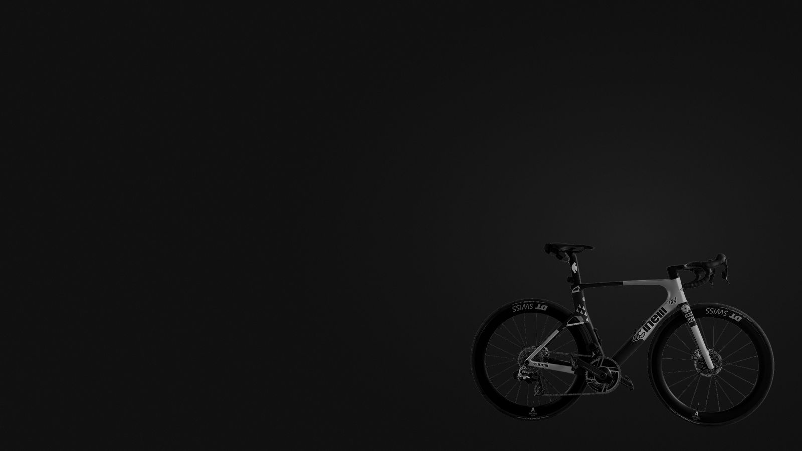

Watt für Wattein Rennrad-Logbuch
Trainingsdaten, Ausrüstung und Strecken eines Hobbyfahrers. Gemessen, nicht geschätzt.
- Form heute · ab Garmin-Sync
- –
- Kilometer
- –
- Tage bis Milano–Sanremo
- –

Trainingsdaten, Ausrüstung und Strecken eines Hobbyfahrers. Gemessen, nicht geschätzt.